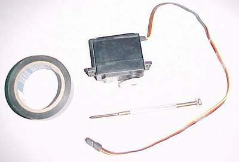
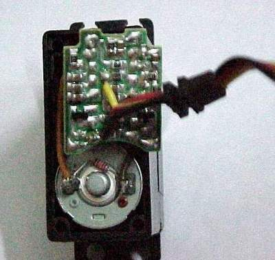
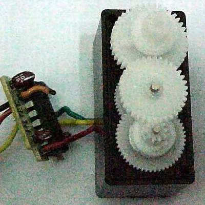
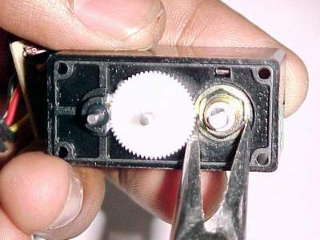
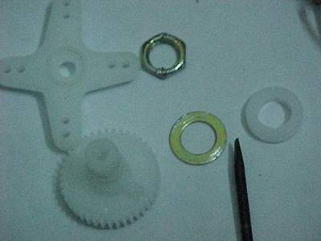
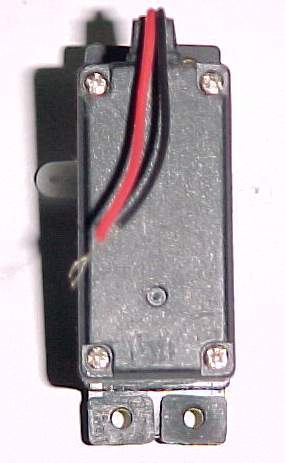
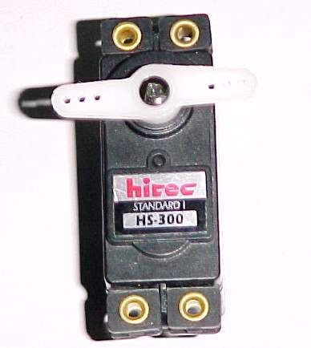

A standard hobby servo such as the Hitec HS-300 includes three terminals: two for power and one for the control/feedback signal. Internally, position feedback is provided by a potentiometer whose resistance changes as the shaft rotates. The built-in electronics use this feedback to hold the shaft at a commanded angle, typically within a range of about 180–270 degrees. Hacking the servo removes the position-control electronics and mechanical stop so the unit can be used as a simple, continuous-rotation DC gearmotor.
-
Step 1 — Parts
The basic requirements are: an HS-300 (or similar) servo, tape to stabilise the gear stack during disassembly, and a few hand tools such as a Phillips screwdriver and a sharp blade. If the gear train will be fully removed and the housing reused for other circuitry, taping the gears is optional.
-
Step 2 — Open the case
Remove the mounting screws and lift off the rear cover of the servo. Take care not to spill the gear train. If necessary, use tape to hold the gears together as a stack.
-
Step 3 — Remove the PCB
Desolder or cut the connections from the motor and potentiometer to the control PCB. Once disconnected, remove the PCB from the case. The motor and feedback pot will remain as purely mechanical components.
-
Step 4 — Isolate the potentiometer
In some designs, it helps to fix the potentiometer in a central position so it no longer limits motion. You can glue it in place or leave it unconnected if it’s not mechanically coupled to the output shaft.
-
Step 5 — Remove the mechanical stop
Most hobby servos include a small plastic tab on one of the gears to prevent full rotation. For continuous rotation, carefully remove this tab using a sharp blade. The goal is to allow the gear to rotate freely through 360 degrees without binding.
-
Step 6 — Motor leads
With the PCB out of the way, solder two wires directly to the motor terminals. These wires become the new motor leads and can be routed out through the original cable exit or through a new opening in the housing, depending on the mechanical layout.
-
Step 7 — Reassembly
Reinstall the gear train in its original order, verify that the output shaft rotates smoothly, and close the case. Once reassembled, the former servo now functions as a compact, continuous-rotation DC gearmotor that can be driven from any suitable motor driver or directly from a supply in simple test setups.